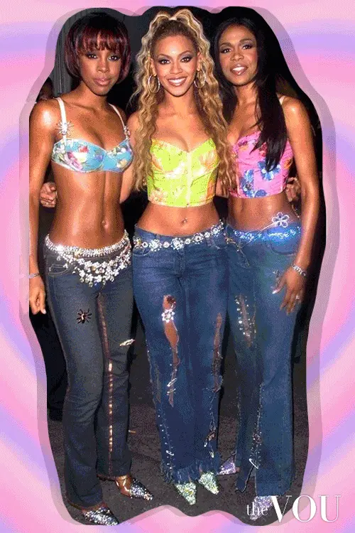

ARTICLE
< < READ ABOUT Y2K FASHION! > >

What Is Y2K Fashion?
Y2K, simply put, means “Year 2000,” and it’s often used in reference to the culture of the early 2000s, especially in regard to fashion. This time was well-defined with celebrity culture, and figures like Paris Hilton and Britney Spears rose to prominence and served as the trendsetters the media followed for this fashion era.
Y2K fashion takes inspiration from the 1990s while also paving the way for new trends with the turn of the millennium. Y2K clothing staples include low-rise jeans, baggy pants, neon colors and bold patterns. These trends have come back into fashion by teens in the 2020s.
It was inspired by technology and metallics, hope for the future while embracing the accessibility of new, fun things like the internet and cell phones. Nowadays, Y2K fashion takes some fashion trends and amplifies them — while leaving the most unflattering parts in the past where they belong.
What Is Y2K Fashion’s Biggest Staple?
The most defining fashion statement of the aughts might change depending on who you ask. If you lived through the early 2000s, you’re likely aware of some of the most popular trends and now see them making a comeback. One thing that everyone can agree on is that the color palettes were bold and bright, a stark contrast to the neutral colors that have dominated fashion and trends as of late.
So, what is Y2K fashion? Much of the decade’s inspiration came from Black artists and was popularized by Destiny’s Child, Missy Elliot and more, later adopted by Britney Spears and actors like Lindsay Lohan in “Mean Girls” and “Freaky Friday.” When you think of the early 2000s, you’ll likely think of bright colors, crop tops, baggy or low-rise pants and more. While some trends, like frosted hair tips, induce cringing nowadays, other elements of the aughts are back in trend and can evoke a sense of nostalgia for past times.
The most defining fashion statement of the aughts might change depending on who you ask. If you lived through the early 2000s, you’re likely aware of some of the most popular trends and now see them making a comeback. One thing that everyone can agree on is that the color palettes were bold and bright, a stark contrast to the neutral colors that have dominated fashion and trends as of late.
So, what is Y2K fashion? Much of the decade’s inspiration came from Black artists and was popularized by Destiny’s Child, Missy Elliot and more, later adopted by Britney Spears and actors like Lindsay Lohan in “Mean Girls” and “Freaky Friday.” When you think of the early 2000s, you’ll likely think of bright colors, crop tops, baggy or low-rise pants and more. While some trends, like frosted hair tips, induce cringing nowadays, other elements of the aughts are back in trend and can evoke a sense of nostalgia for past times.

Flip phone is essential

Y2K Fashion Battle
Play Now!
Y2K Fashion Battle
Play Now!


Y2K Aesthetic
Play Now!
Y2K Aesthetic
Play Now!

New Girl In School
Play Now!